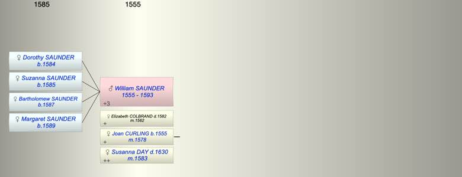

| [Index] |
| William SAUNDER (1555 - 1593) |
|  |
| b. abt 1555 |
| m. (1) 19 Oct 1562 Elizabeth COLBRAND ( - 1582) |
| m. (2) 07 Jul 1578 Joan CURLING (1555 - ) at St Lawrence |
| m. (3) 28 Jul 1583 Susanna DAY ( - 1630) at St Laurence |
| d. 1593 at St Laurence aged 38 |
| Children (4): |
| Dorothy SAUNDER (1584 - ) |
| Suzanna SAUNDER (1585 - ) |
| Bartholomew SAUNDER (1587 - ) |
| Margaret SAUNDER (1589 - ) |
| Events in William SAUNDER (1555 - 1593)'s life | |||||
| Date | Age | Event | Place | Notes | Src |
| abt 1555 | William SAUNDER was born | ||||
| 19 Oct 1562 | 7 | Married Elizabeth COLBRAND | |||
| 07 Jul 1578 | 23 | Married Joan CURLING (aged 23) | St Lawrence | ex FMP PR | |
| Dec 1582 | 27 | Death of wife Elizabeth COLBRAND | St Lawrence | buried 2 Dec 1582 | |
| 28 Jul 1583 | 28 | Married Susanna DAY | St Laurence | ex MW | |
| 1584 | 29 | Birth of daughter Dorothy SAUNDER | St Laurence | Note 1 | |
| 1585 | 30 | Birth of daughter Suzanna SAUNDER | St Laurence | Note 2 | |
| 1587 | 32 | Birth of daughter Bartholomew SAUNDER | St Laurence | Note 3 | |
| 1589 | 34 | Birth of daughter Margaret SAUNDER | St Laurence | Note 4 | |
| 1593 | 38 | William SAUNDER died | St Laurence | ||
| Note 1: baptised at St Laurence 9 Aug 1584 |
| Note 2: baptised 21 Nov 1585 at St Laurence |
| Note 3: baptised 22 Oct 1587 at St Laurence |
| Note 4: baptised 12 Oct 1589 at St Laurence |
| Personal Notes: |
| He links to Susannna Day who married Gregory curling |
| Created on a Mac™ using iFamily for Mac™ on 8 Oct 2023 |